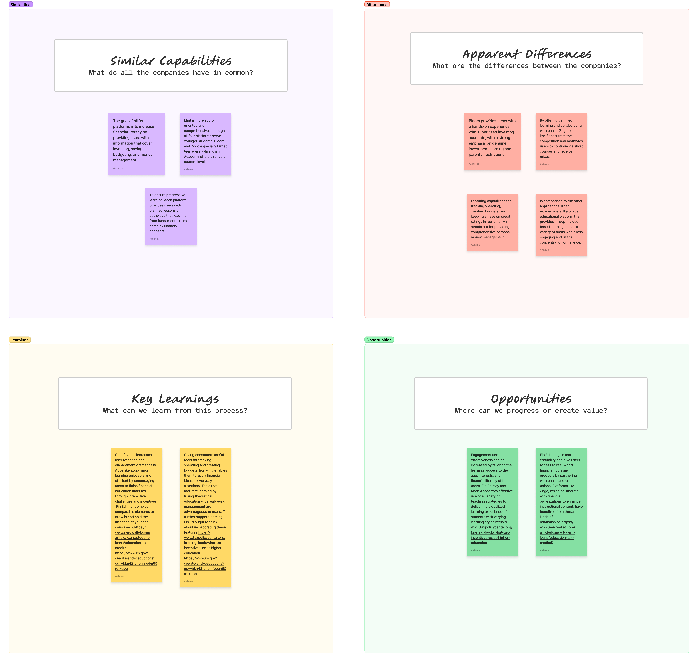
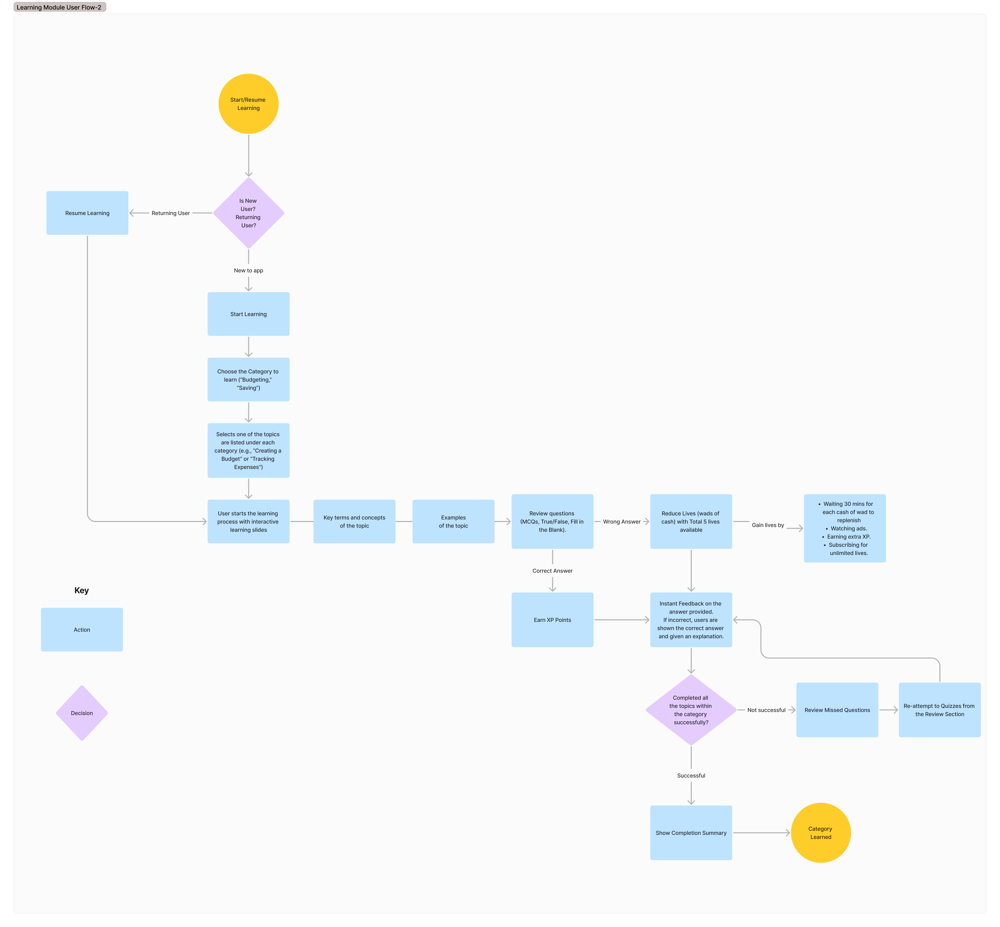
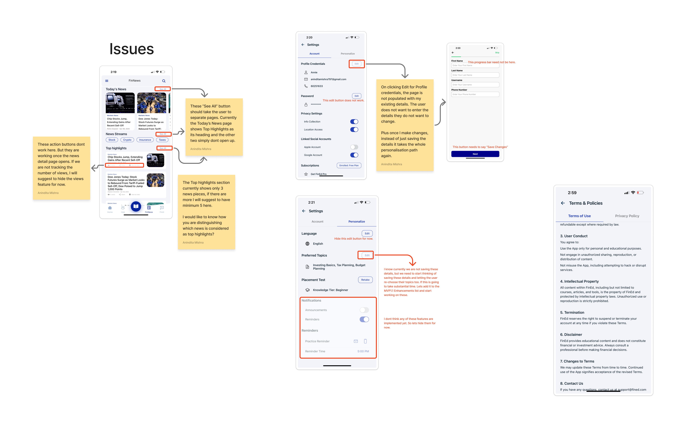
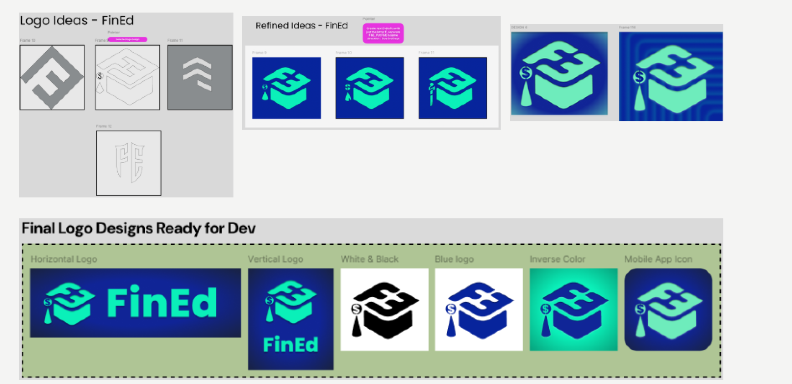
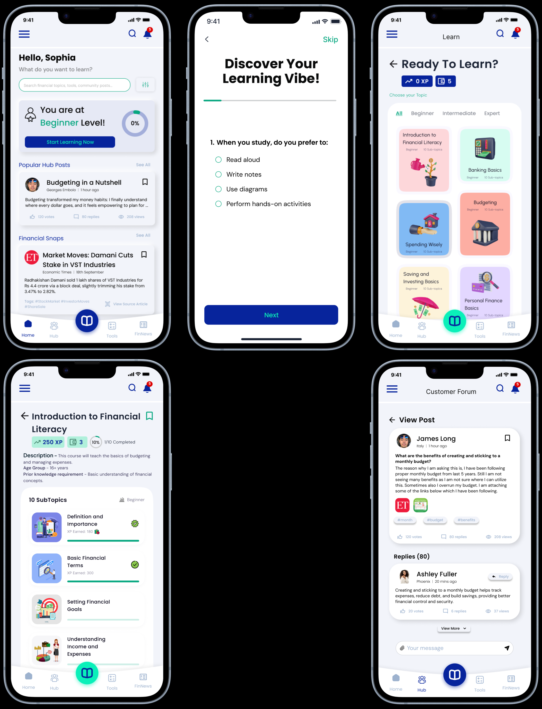
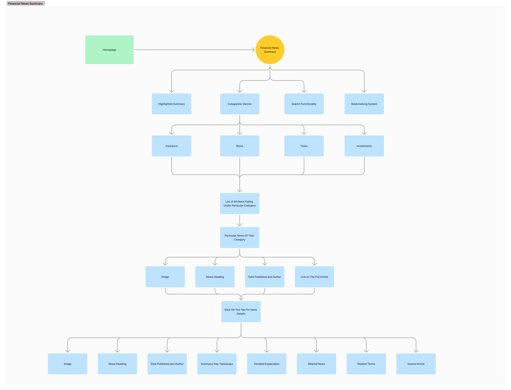
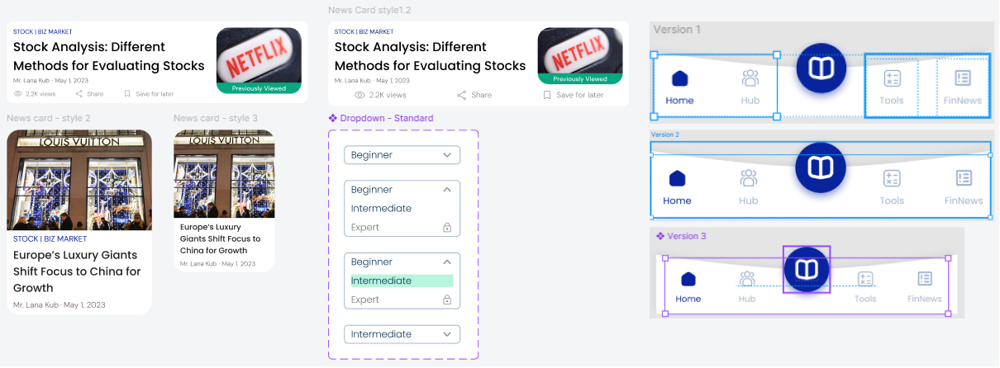
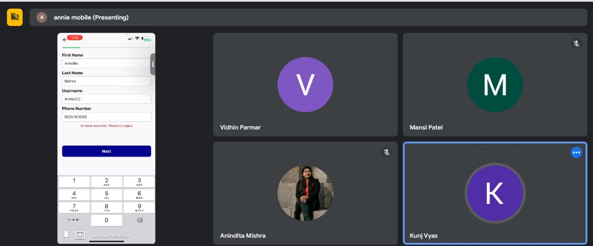
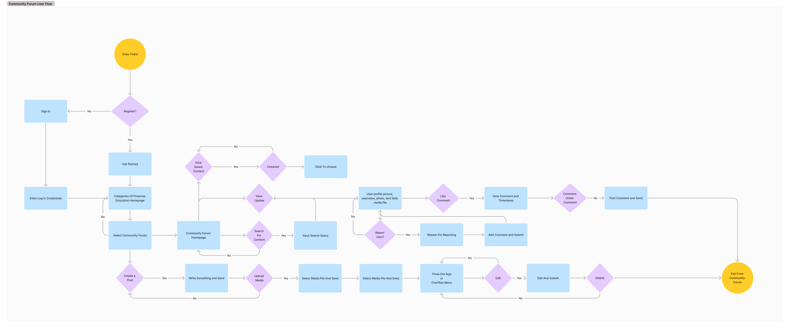
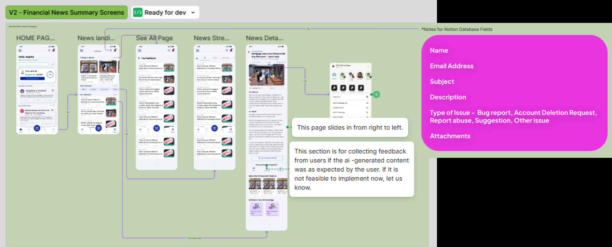

Fintech · EdTech · Mobile · June 2024 – April 2025
The app that made financial learning feel like progress.
FinEd is a gamified financial literacy platform I designed end-to-end - from 0 to shipped - as
the sole designer on a cross-functional team of 7: engineers, PM, content strategist, and AI/ML engineer.
Product intro · FinEd
My role
Sole product designer
Platform
Mobile-first (iOS)
Timeline
10 months
Tools
Figma · FigJam · Maze
60%
Engagement increase with XP + gamification mechanics
2.5×
Session time for users receiving personalised news
+40%
Daily logins after financial news feature launched
WCAG AA
Accessibility across all core flows, first ship
01 The real problem
Financial illiteracy is a measurable crisis. Existing apps weren't designed to fix it.
The market data made the problem undeniable:
$388B
lost by Americans in 2023 due to financial illiteracy
16%
of 18–26 year olds feel optimistic about their financial future
38%
Gen Z financial literacy rate - lowest of any US generation
Existing solutions fell into two camps: overly complex tools that assumed prior knowledge (Mint,
Robinhood), or shallow gamified apps that taught trivia instead of behaviour (Zogo, Bloom). Nobody had
designed for the engagement gap - the moment a user understood a concept but had no way to connect it
to their real financial life.
FinEd's founding hypothesis: a user-centred, gamified approach with real-world financial news
context - tailored to different literacy levels - could close that gap. Three design goals followed: retention
through personalised content, a freemium model that didn't punish beginners, and news that gave abstract
concepts real stakes.
"I opened three different apps. They all started with the same 'what is a budget'
article. I already know what a budget is - I just can't stick to one. None of them helped with that."
User interview · 26-year-old, first job post-grad
02 Real constraints
One designer. Three literacy levels. A CMS handoff. A freemium model to figure out.
Sole designer across the entire product surface
I owned everything: IA, user flows, brand, visual design, component library, usability
testing, and dev handoff. Every decision had to be self-documented in real time - there was no design team
to QA the work.
Three distinct literacy levels in one adaptive product
Beginner (13–18), intermediate (18–26), and expert (25–40) users share the same app
but need fundamentally different content pacing, IA depth, and navigation. The placement test and adaptive
system had to feel invisible, not clinical.
Freemium vs premium - a monetisation problem baked into every design decision
Every feature carried a hidden business question: is this free or paid? I had to
design a freemium model that felt generous enough to retain users without cannibalising premium
conversion. No dark patterns - the product's credibility depended on it.
AEM handoff - content must be editable without a designer
The content team needed to update financial news, learning modules, and community
posts through a CMS (AEM) without breaking layouts. Every component was designed with content variability
in mind - including empty states, long text, missing images, and edge cases.
03 What research actually found
SWOT and competitive analysis ran as workshops. Findings became shared conviction, not
deliverables.
I facilitated SWOT and competitive analysis workshops with stakeholders and the PM - research
conducted collaboratively, not handed down. That framing mattered: when findings shaped strategy in real time,
no one questioned them later.
Competitive analysis · Bloom / Zogo / Mint / Khan Academy · UVP, advantages, and
disadvantages mapped
Bloom + Zogo
Gamification works - challenges and incentives maintain engagement. But both
oversimplify complex topics in pursuit of completion rates.
Mint
Practical tools bridge theory and behaviour. But Mint's complexity and ad model
created anxiety, not confidence, for beginners.
Khan Academy
Personalised learning drives retention better than any other pattern. But it lacks
interactive financial simulations - it teaches concepts without stakes.
The gap
No competitor combined adaptive learning paths, AI chatbot, gamification, real
financial news, community forum, and practical financial tools in one mobile-first product.
Four findings. Only two survived as design inputs.
I ran 12 interviews and 3 rounds of unmoderated testing on Maze. Here's what was true - and what I
initially believed that turned out to be wrong.
9 / 12
Users had tried a financial app before. 7 of those 9 churned within 2 weeks.
Reason: "felt like starting from zero every session."
3 min
Maximum acceptable lesson length - unprompted from 10 of 12 users. I had already
designed 8-minute modules. Scrapped everything and rebuilt.
0 / 12
Users who responded positively to gamification points and badges when asked
directly. But 8 of 12 stayed longer when progress bars were visible. Behaviour contradicted stated
preference.
100%
Users who wanted to apply a concept immediately after learning it - not in a
separate "practice" section. This single finding killed the original tabbed layout.
The critical lesson: users say they hate gamification but respond
to progress signals. The challenge became surfacing progress without making it feel like a game - no
coins, no badges, just visible, honest forward motion.

Research outcomes · similarities, apparent differences, key learnings, and actionable opportunities · facilitated in FigJam with stakeholders
What research confirmed
Gamification drives retention - but only when tied to meaningful progress, not arbitrary points. Personalised learning paths increase confidence. Real-world context (financial news) bridges the gap between knowledge and behaviour.
Opportunities unlocked
Partnerships with financial institutions for credibility. Tailored content for niche segments (young adults, entrepreneurs, retirees). Leveraging AI for personalised financial advice - a space no competitor had fully occupied.
04 How I worked
10 months. Full product scope. The IA was the most important thing I shipped.
Jun–Jul
Discovery · SWOT + competitive workshops
Defined three product goals with stakeholders: retention, monetisation model, and
contextual news engagement. Built shared understanding before any screen work began.
Aug–Sep
IA + user flows · full sitemap and three core journeys
Mapped all 7 product sections and 20+ subsurfaces. Created detailed user flows for
the learning module, financial news summary, and community forum - each flow covered new user, returning
user, and edge case paths.
Shipped
Sep–Oct
Brand + logo system
Blue + green palette to evoke trust and growth. Logo: "FE" in a graduation cap with
dollar-sign tassel - education meets financial empowerment. Multiple variants delivered: horizontal,
vertical, mobile icon, and inverse.
Shipped
Oct–Jan
MVP build · all core flows + component library
Designed onboarding, placement test, learning modules with embedded quizzes,
financial news V1, community forum, widget toolkit, and AI chatbot modal. MVP review surfaced 6 critical
issues documented with annotated team stickies.
Jan–Feb
Usability testing + two major redesigns
Quiz interface rebuilt as Smart Audit format. Cash reserves empty state redesigned
from punitive countdown to motivational recovery path. Both shipped into V2.
2 major redesigns
Mar–Apr
V2 dev handoff · interaction annotation for AEM
Shipped V2 financial news screens as "Ready for Dev" in Figma with full interaction
specs, transition notes, and Notion database field documentation for the CMS team.
Shipped
The IA and user flows were the most consequential early deliverable. They
forced full team alignment on product scope before a single screen was designed.
Full product sitemap · 7 sections, 20+ subsurfaces · built collaboratively in
FigJam

Learning module user flow · new/returning user paths, quiz mechanics, XP system,
category completion
The MVP review surfaced 6 real issues: broken action buttons, navigation opening the wrong pages,
settings not persisting state, and features designed but not yet built. Documented with annotated stickies - not
buried in a Notion doc.

MVP1 issues audit · team-annotated in FigJam · 6 critical UX issues documented
before V2 began
04b Brand & strategy
Brand & Strategy for FinEd's Growth
Through collaborative workshops and iterative explorations, I helped define FinEd's foundational
brand direction - focusing on accessibility, trust, and long-term user engagement. Every visual choice had to
earn its place against a single test: does this build confidence in a first-time learner?
AccessibleInnovativeUser-centricEducational
Colour strategy
Blue and green were selected as primary brand colours to represent
trust, growth, and financial confidence - supported by neutral tones for a clean, distraction-free learning
environment.
Logo exploration
The logo combined the initials "FE" within a graduation cap, with a dollar sign integrated
into the tassel - symbolising financial empowerment through education. Multiple variants were delivered:
horizontal, vertical, white/black, blue, inverse, and mobile app icon.

05 The decisions that mattered
Three choices that defined the product. And why I made them.
1
Gamification over static content - validated before committing dev resources
Why
Early user feedback flagged the static MVP as "boring" and "too traditional."
Two directions were on the table: more content depth, or behaviour-change mechanics (XP, badges, streaks).
Research from Bloom and Zogo confirmed gamification increases engagement - but only when tied to real
concepts, not trivia. We validated the bet before full investment: 60% engagement
increase when XP and progress tracking were added to the learning flow.
What I killed: The original long-form article lesson
format. Users in testing stopped reading after the first paragraph. Every lesson was rebuilt as
interactive slides: key term → real example → embedded quiz. Harder to produce. Measurably more effective.
2
Financial news as a first-class retention feature - not a content add-on
Why
The original brief treated financial news as a supplementary section. I pushed
to make it a primary feature because users aged 18–30 were already consuming financial news on Reddit and
Twitter - they just couldn't connect it to their own financial decisions. FinEd could bridge that gap. The
result: users with personalised news spent 2.5× longer per session, and daily logins
increased 40% after the news feature launched.
The design challenge: The IA for the news section went
through two complete rewrites - from flat list to a category-driven structure (Insurance / Stock / Taxes /
Investments) with AI-generated summaries, source attribution, and a "Enhance Your Knowledge" module link
at each article's end. The bridge between news and learning became the product's strongest differentiator.
3
Placement test before any content - even though it added onboarding friction
Why
Serving one experience to a 14-year-old and a 35-year-old finance professional
is a failure state for both. The placement test personalised the starting point and unlocked the right
content tier immediately. A user who sees beginner content they already know will churn in session 1. A
user dropped into advanced content with no foundation will disengage in session 2.
The trade-off accepted: The placement test adds 2–3
minutes to onboarding. We tested a "start anywhere" model - session 1 churn was significantly higher.
Users who completed the test had materially better day-3 retention. The friction earned its place.
05b Prototype & visual design
Prototype & Visual Design Exploration
The initial prototype focused on simplifying financial education through an intuitive, accessible
mobile experience. Every interface decision was filtered through clarity first: if a first-time learner couldn't
navigate it immediately, it wasn't ready.

Visual design exploration · onboarding, learning hub, module detail, community
forum · mobile-first
Modern typography with strong information hierarchy - users know exactly where they
are at every step
Clean bottom navigation with a prominent central learning CTA - one tap back to
progress from anywhere
Gamified progress indicators embedded in the learning UI - XP, cash reserves, and
completion status always visible
Accessible UI hierarchy with WCAG AA contrast across all components - designed in,
not retrofitted
Consistent iconography reinforcing financial concepts - visual language that
learners recognise intuitively
06 Usability testing + iteration
Two rounds of testing produced two redesigns that shipped into the final product.
Prototype testing wasn't a process checkbox. Each round surfaced real friction that changed the
product before dev investment.
Iteration 1 - The quiz interface.
Before
Multi-column layout, XP and cash counter visible during the quiz - cognitive overload.
Users didn't know where to focus. Incorrect feedback appeared inline with no clear retry or learn path.
After - Smart Audit
Single focused question per screen. XP and cash reserve shown as ambient context. Wrong
answers trigger instant feedback with the correct answer and a brief explanation - learning happens at the
moment of mistake.
Iteration 2 - The empty cash reserves
state.
Before
"Empty Wallet!" with a countdown timer felt punitive. Users reported feeling penalised
for learning. Recovery options (watch ads, subscribe) were below the fold - effectively hidden.
After - Cash Reserves Depleted
Redesigned as a gentle pause, not a punishment. Recovery options are prominent. A
"learn other subtopics" path keeps users progressing - eliminating the dead-end feeling that caused the
dropout spike.
06b Feature deep-dive
Financial News & Real-Time Learning
Users often understand financial concepts in isolation - but struggle to connect them to
real-world events. The Financial News feature was introduced specifically to bridge this gap: surfacing
simplified, contextual financial updates directly within the learning experience.
The feature wasn't just a news feed. It was a contextual layer - every article was tagged to a
learning module, so reading about a Fed rate change could immediately lead a user to the Interest Rates module.
Theory and reality in one tap.
Financial News feature · category-driven news with AI summaries, source
attribution, and direct module links
+40% daily login increase after the news feature launched - context brought users
back, not just streaks
2.5× longer sessions for users who received personalised news recommendations
Category-driven IA (Insurance / Stock / Taxes / Investments) - users scan for
relevance, not volume
AI-generated summaries with neutral tone - kept content digestible for all three
literacy levels simultaneously
Bookmarking system + related terms - supporting deeper engagement and repeat visits
The IA behind the news feature went through two complete rewrites before this structure emerged - each node in the flow represents a deliberate decision about how much information to surface at each step.

Financial News Summary user flow · from homepage → category → article list → detail view · bookmarking + "Enhance Your Knowledge" path
06c Gamification
Gamification & User Motivation
Gamification was introduced to make financial learning feel rewarding, approachable, and
habit-forming - rather than overwhelming. The goal wasn't to add game elements for novelty. Every
mechanic had to reduce a specific friction in the learning journey.
XP rewards for every completed lesson - visible progress within sessions and across
learning levels
Streak systems that reward consistency without punishing missed days - motivation
without anxiety
Achievement badges tied to real milestones - completing a category, not just logging
in
Personalised learning motivation - progress feels individual, not compared to others
Milestone celebrations at level completion - reinforcing that progress is real and
meaningful
Gamification system · XP, cash reserves, streak tracking, and badge milestones
in the learning flow
The result: gamification reduced learning friction by giving users a
visible reason to return. Emotional engagement with financial education increased - complex topics felt
approachable because progress was always tangible.
07 Cross-functional collaboration
The best design decisions came from the team, not from the designer.
As the only designer on a team of seven, my effectiveness depended entirely on how well I
collaborated. Each discipline shaped a different part of the product.
Product Manager
Defined content strategy + word-level UX decisions. How microcopy shapes motivation
at each step.
UX Researcher
Identified the most effective engagement patterns. Their data shaped the
gamification model and placement test decision directly.
Behavioral Scientist
Ensured messaging felt encouraging, not restrictive. Directly drove the cash
reserves redesign - from punitive to motivational.
2 Front-End Devs
Seamless AEM handoff. I validated UI components against adaptive content edge cases
before any screen reached dev.
2 Back-End Devs
Designed around data model constraints - the XP system, user tier logic, and news
category structure had to map to what the backend could support at launch.
AI/ML Engineer
The chatbot, adaptive news personalisation, and placement test scoring all required
design decisions about what the model could reliably do vs. what needed graceful fallback states.

Connected with developers for seamless CMS handoff
I worked closely with front-end developers to ensure every component was built for
adaptability - not just the designed state, but all content variability edge cases. Layouts had to hold
under long text, missing images, different user tiers, and CMS-driven content updates.
Live Figma session · news homepage review with team annotations

Live demo · Stakeholder buy-in was faster with interactive prototypes than
static mockups
The community forum was one of the most complex surfaces to design - it needed to support posting, threading, moderation, and content saving while staying lightweight enough for users in the middle of a learning session.

Community Forum user flow · registration → post creation → thread interaction → moderation paths · designed for learning-in-progress context
Two concrete outcomes: stakeholder buy-in was faster because decisions were backed by shared
research and interactive prototypes rather than static mockups. Dev handoff was smoother because I documented
interaction logic and content variability edge cases - not just the happy path.
08 Impact
What actually moved - and what I'm still measuring.
60%
Engagement increase
Measured after adding XP, badges, and progress tracking to the learning flow.
Validated in usability testing before full dev investment.
2.5×
Session time with personalised news
Users with personalised financial news spent 2.5× longer per session. The news
feature moved from "content add-on" to the product's primary retention driver.
+40%
Daily logins post-news launch
Bite-sized, actionable financial news drove a 40% daily login increase. Context
gave users a reason to return - not just a streak to maintain.
0
Accessibility debt at launch
WCAG AA compliance built into the component library from the start - not
retrofitted. Accessibility as a design practice, not a compliance step.

V2 Financial News · "Ready for Dev" · interaction annotation + Notion database
field docs for the CMS team
What I'm still measuring: Long-term retention past week
4. The placement test and adaptive content model are strong hypotheses about sustained engagement - the clearest
signal will come from 30-day and 90-day cohort data. That instrumentation was built into the roadmap alongside
the web platform expansion and analytics tool onboarding.
09 Reflection
What I learned. What I'd do differently.
What this project taught me
Cross-functional collaboration isn't a process step -
it's a design input. The behavioral scientist's framing on the cash reserves state produced a better design
than I'd have reached independently. The UX researcher's engagement data shaped the gamification model in
ways that UI intuition alone wouldn't. Being the sole designer doesn't mean designing in isolation. The best
product decisions came from pulling the right people into the right conversations at the right time.
What I'd do differently
I'd instrument retention metrics earlier - before
the first user test, not after launch. The gamification model and news feature both proved their engagement
value in testing, but I was measuring session signals (time-on-screen, click-through) rather than the
behaviour that mattered most: do users come back in week 3? Building retention measurement infrastructure
from day one would have sharpened every subsequent decision.